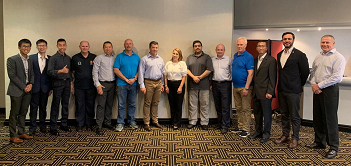

GUIDELINES REVIEW GROUP (GRG) 2018 - 2020
The list of approved members for the GRG from 2018 to 2020
Co-Chair of GRG, Mr. David Sochor and Mr. Anwar Abdullah
| Name | Country | Position | Email address |
| David Sochor | Switzerland | Co-Chair | david.sochor@eda.admin.ch |
| Anwar Abdullah | Singapore | Co-Chair | Anwar_abdullah@scdf.gov.sg |
| Annika Coll | Spain | Member | annika.coll@madrid.org |
| Sebastian Mocarquer | Chile | Member | smocarquer@gmail.com |
| Silvia Ballen | Colombia | Member | silvia.ballen@gestiondelriesgo.gov.co |
| Johnny Ramírez Zumbado | Costa Rica | Member | j.rz1975@hotmail.com |
| David Lewis | Australia | Member | David.Lewis@fire.nsw.gov.au |
| Paul Burns | New Zealand | Member | Paul.Burns@fireandemergency.nz |
| Chen Hong | China | Member | chenhongicd@163.com |
| Mohammed Alshahrani | Saudi | Member | engmohd404@gmail.com |
| Firas Falah Abu Al Sondos | Jordan | Member | Disa_dpt@cdd.gov.jo; firascdd@yahoo.com; |
| Samghouli Soufian | Morocco | Member | Soufian104@yahoo.fr |
| Belit Tasdemir | Turkey | Member | belittasdemir@akut.org.tr |
| Martin Evers | Netherlands | Member | martin.evers@vrh.nl |
| Vasily Evseev | Russia | Member | dmd.mchs@yandex.ru; timer84@gmail.com |
2020
The 7th GRG meeting took place from 3 to 5 February in Geneva
Annex A - Feedback on INSARAG Guidelines 2020
Annex B - Shifting of Selected Annexes, Forms and Checklists
Annex C - Updates to INSARAG.org (INSARAG Guidelines, TRL, Guidance Notes
Salient Pointers: Co-Chairmanship Working Model - GRG 2020
GRG 2020_ Co-Chair Write-up document
2019
The 6th GRG Meeting took place from 9 to 11 December 2019 in The Hague, Netherlands
Coverning Note on TRL and Guidance Notes
Annex C _ TRL Navigation Overview
::::::::::::::::::::::::::::::::::::::::::::::::::::::::::::::::::::::::::::::::::::::::::::::::::::::::::::
The 5th GRG Meeting took place from 6 to 8 October 2019 in Santiago de Chile, Chile
GRG Anney A proposal for coour coding system
Key Takeaways for GRG TWG Meeting
:::::::::::::::::::::::::::::::::::::::::::::::::::::::::::::::::::::::::::::::::::::::::::::::::::::::::::::
Final version of the 3rd GRG Meeting Chairman Summary which took place from 4 to 8 February in Geneva during the Humanitarian Network Partnership Week (HNPW)
3rd GRG Meeting Chairman Summary
4th Meeting of GRG, 12-14 June 2019, Singapore
The INSARAG Guidelines Review Group(GRG) Meeting hosted by the Co-Chair, Singapore, is taking place this week with 15 expert participants from 11 countries representing the Americas, Africa, Europe, the Middle-East, and the Asia-Pacific regional groups. The INSARAG Steering Group as directed the GRG to conduct the 5 yearly extensive review and consultations with the global network for a version 2020-25, and to be launched at the 30th Anniversary of INSARAG in Warsaw, Poland in October 2020.
The INSARAG Guidelines are the cornerstone of the globally accepted global standards as endorsed by UN GA 57/150 of 16 December 2002 and guides member countries on urban seach and rescue(USAR) preparedness and response arrangements.
 
2018
The GRG 2020 also apprised the TLs on the overall plan and current status of work.
In the breakout session, the GRG 2020 will engage the TLs on the matter of the Technical Guidance Reference Library/Best Practice. Regular engagement and close coordination with the INSARAG Working Groups is imperative to the achievement of the objective of a comprehensive reviewed Guidelines. The outcome of this engagement will be captured in the chairman’s summary and be shared with the INSARAG Network.